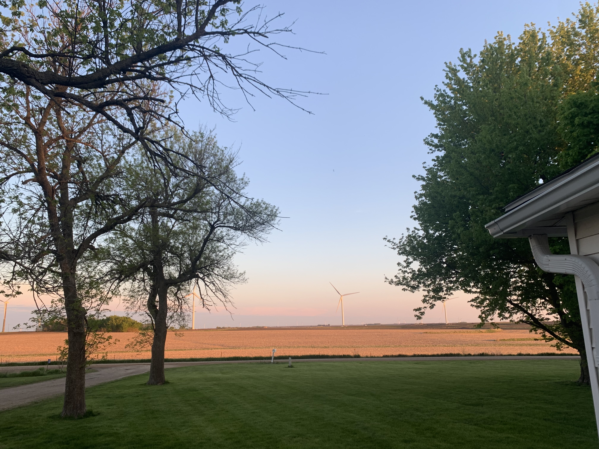

Junior Software Developer
Point Comfort Underwriters
About Me
Nice to meet you! My name is Jordan Wendel. I was born and raised on a small farm in Schaller, Iowa. I am currently a Junior Software Developer at Point Comfort Underwriters in Indianapolis, Indiana. I am passionate about learning a broad range of languages, technologies, and frameworks all while building things from the ground-up and making positive impacts on the world in the process.

In 2021, I graduated from Butler University (Go Dawgs!) with a major in computer science and a minor in data science. I was also a proud member of Butler's baseball team until the fall semester of my senior year, where I decided to fiercly pursue my passion for technology and development.
Projects
Volunteering
Making positive impacts on the community is an important part of who I am. To start my journey, I am volunteering at Fido (Friends of Indianapolis Dogs Outside), a fantastic animal advocacy non-profit that helps people improve the quality of life for their outside dogs. Their primary areas of focus are urban, low income, higher crime neighborhoods of Indianapolis.
My primary focus will be providing technical assistance to their current systems and improving their website via WordPress. Sharing the knowledge and skills that I have acquired and will gain over my career not only has positive impacts on my life, but also contributes to something greater than any one individual.